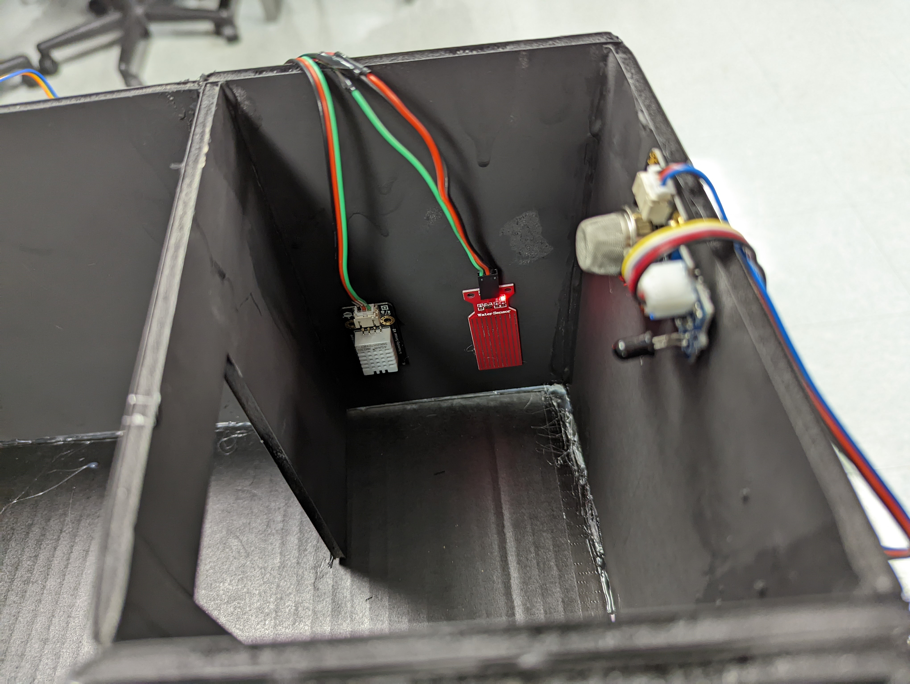
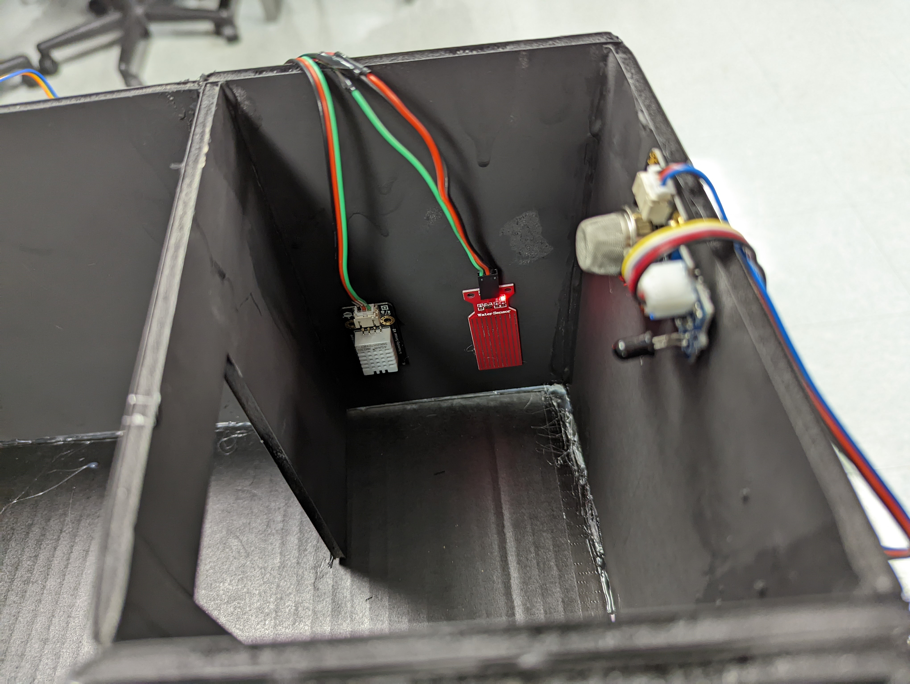

Network Infrastructure Devices
These devices are the prerequisite devices to enable the PoE system. They create a network so that the Network Client Devices can communicate with each other to manage the Hardware Devices.
Cisco Switch
This device serves as a PoE injector, supplying any attached PoE capable devices with both power and data connection. Note that this is a switch, not a router: the switch does not deal in the realm of "IP addresses," meaning if the connected devices need to be connected to the internet, a router must be used (i.e. the Asus Router below).
Asus Router
This is a typical consumer wireless router, which is connected to the internet via a wired Ethernet cable. Next, one of its ports is connected to the Cisco switch in order to let every device that the switch is connected to have access to the internet. The router is wireless, so personal computers can be connected to the same network as PoE devices without a wired connection. This is useful for using SSH to configure any of the various Raspberry Pis found in the system.
Raspberry Pi 3 Model B
We currently are using just one Raspberry Pi microcomputer to power our demo, however in a larger scale implementation, we could use a variety of cheaper microcontrollers that don't have all the advanced features of the Pi that we don't really need.
MQ-2 Combustible gas sensor
The MQ-2 Semiconductor sensor can detect smoke, alcohol, propane, hydrogen, methane, and carbon monoxide. It operates by essentially changing its resistance (qualitative measurement) when its sensing material interacts with certain gasses.
MCP3008 Analog-digital converter
This integrated circuit converts the analog signal from the MQ-2 smoke into digital signals that can be read by the raspberry pi, as it does not have an ADC built in.
Power over Ethernet Splitters
These splitters take a PoE enabled cable at it’s input and splits into two outputs; a male RJ45 (ethernet) connector as its first output, and either a 5v MicroUSB or 5v Barrel connector as its second power output. This 5V from the Barrel The MicroUSB variety are used for power devices like the Raspberry Pis, while the barrel output is used alongside the DC power jack adapters to provide a power terminal for less sophisticated components.
Soteria POE Smart Alarm System Synopsis:
Our idea for the Soteria Smart Fire alarm system came from our problem statement given to us at the beginning of the class: “Current fire alarms lack the ability to
provide essential information to occupants, fire departments, and safety officials, resulting in subpar evacuation and emergency response protocols.”. We set out
to create a new foundation to address this problem statement that can be iterated and improved in the future semesters. We conceptualized a network of microcontroller devices
that are connected to some number of smoke and fire sensors that will collect and report data to a centralized location. This network of devices could be broadened to include
PoE devices that are meant for things other than fire to make the system suitable for more general security applications, such as motion and water sensors to detect tampering
or floods. These microcontroller devices could utilize PoE for power and for communication. The PoE standard would make installation and maintenance of such devices easy and
inexpensive. The data from each microcontroller and it’s sensors could be collected, stored, analyzed and used for things such as automated alerts and logging. This could allow for
emergency response, such as in the case of a fire, to have more detailed information about the emergency situation, and thus potentially be better able to respond to the situation.
The prototype we constructed consists of a single Arduino connected to 8 smoke sensors, 8 flame sensors, and a handful of other sensors (motion, temperature, humidity, water) totalling 22 in all.
This arduino collects data from these sensors every 3 seconds and stores it. A Raspberry Pi is
connected to this Arduino and communicates using the I2C protocol to receive the collected data as an array of bytes. This data is then put into a database that is connected to a Django powered web application
that runs on the Raspberry Pi. This web application provinces a visual interface with which a registered user can monitor the readings coming from the sensors. The prototype is mainly a high level representation
of what a system like this could look like. The concept and prototype are intended to be a starting point for further development by future semesters. There are many improvements and additions that can be made.
Hardware demo constructed to roughly visualize our idea


 
